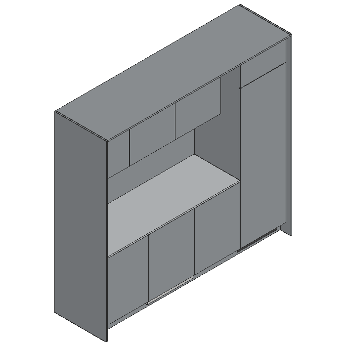
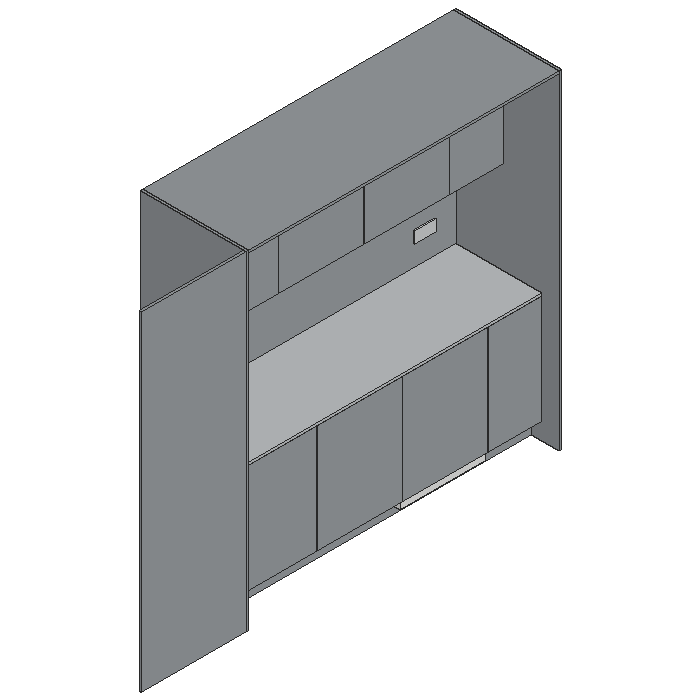
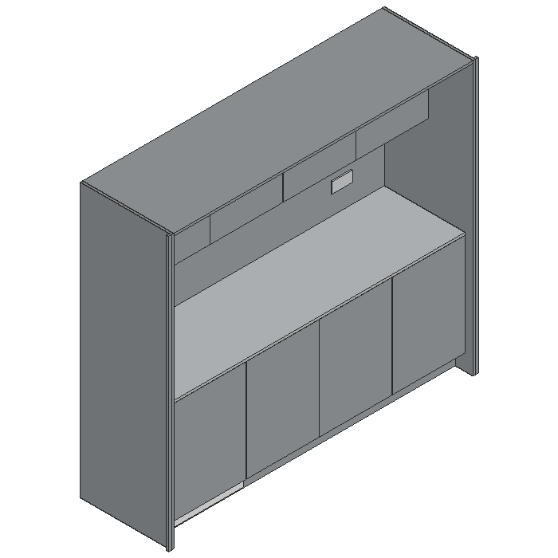

C016 tekjøkken
Plan 2 – Thommessen-torget
REV C · B 2436,8 × D 680 × H 2284
Hvitevarer: Miele K 7737 D kjøleskap og G 7760 SCVi oppvaskmaskin – leveres av Faginnredning
Åpne 3D-modell →
D023 tekjøkken
Plan 3 – tekjøkken
REV C · L 2950 × H 2311 × D 742,4
Hvitevarer: Miele KU 7015 D kjøleskap under benk – leveres av Faginnredning
Åpne 3D-modell →
E006 tekjøkken
Plan 4 – korridor
REV B · B 2269,8 × D 680 × H 2040
Hvitevarer: Miele KU 7015 D kjøleskap under benk – leveres av Faginnredning
Åpne 3D-modell →